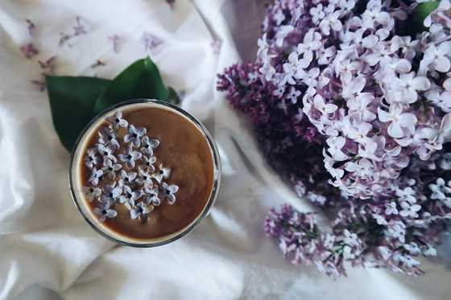
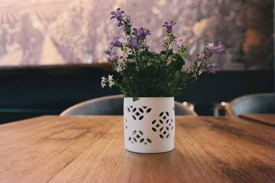
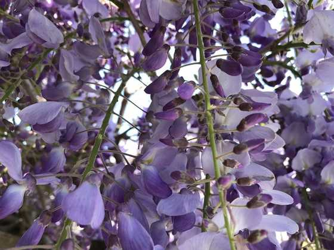
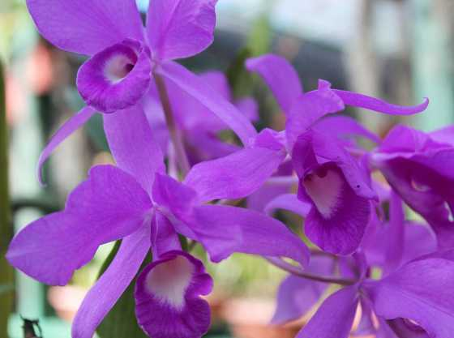
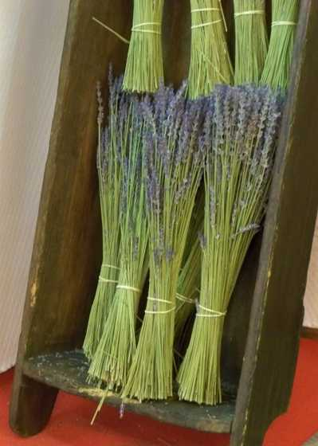
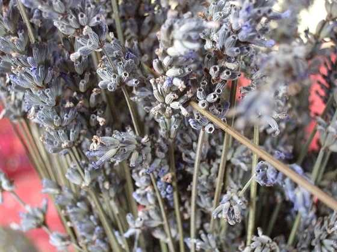

栃木県栃木市本町 / Patisserie+Cafe
MAUVE
ろうそくの灯りのような静けさの中で、
ひとつずつ作られたお菓子と、ゆっくりお茶を。
About
ひとりで営む、小さなパティスリー&カフェ。
MAUVE(モヴ)は、栃木市本町にあるパティスリーとカフェを兼ねたお店です。紹介ブログによれば、店主さんがお一人で切り盛りされており、ろうそくなどが置かれた落ち着いた空間でイートインができるそうです。お店は2013年に栃木市平柳町で始まり、2023年5月に本町へ移転した、と食べログの掲載情報で確認できます。
名物は、渋皮煮がまるごと1個入った栗のモンブランとされ、季節のタルトやムース、ケーキとポットの紅茶のセットなどが紹介されています。
情報源: ブログ記事 / 食べログ(現店舗) / 食べログ(移転前) / Instagram
店名の由来は確認できていません。「MAUVE」は淡い紫がかった色を指す言葉で、このページの配色(くすんだバラ色とろうそくの金色)は制作側のイメージです。
Image
紫と、甘い香りのイメージ。
写真は雰囲気を伝えるフリー素材のイメージで、店舗の実際の様子やお菓子そのものではありません。











Menu
お菓子とお茶

| 営業時間 | 準備中 |
|---|---|
| 定休日 | 準備中 |
| 価格 | 準備中 |
| 電話 | 準備中 |
メニューや営業日は変わることがあります。最新情報はInstagramをご確認ください。
Voice
口コミ
静かな店内でモンブランをいただきました。ひとりでゆっくりできる時間がうれしいです。
季節のタルトが楽しみで、つい足を運んでしまいます。紅茶との相性もよかったです。
手みやげに焼き菓子を選びました。ひとつひとつ丁寧に作られている印象です。
上の3件は制作側が作成したイメージ例で、実在のお客様の声ではありません。
Photo credits
掲載写真はフリー素材のイメージです。店舗や栃木市で撮影されたものではありません。
- lav1「Lavender flowers in bloom, Oregon」icetsarina / CC0 1.0
- lav2「Lavender flowers (1)」Humoyun Mehridinov / CC BY-SA 4.0
- blueb「Dish of blueberries」Petar Milošević / CC BY-SA 4.0
- lilac「Top view of floral coffee」Brigitte Tohm / CC0 1.0
- violet「Violet flowers on a table」Brigitte Tohm / CC0 1.0
- wist「Wisteria in Massachusetts」Oakley413 / CC BY-SA 4.0
- orch「Purple Orchid from Costa Rica」The LEAF Project / CC0 1.0
- mac「Macarons on a blue rectangular serving dish」Jeppestown / CC BY-SA 2.0
- eclair「Eclair with a fork」Fran1812 / CC BY-SA 4.0
- bunch「Gerbe de lavande」Véronique PAGNIER / CC0 1.0
- dry「Lavender dry」Booksworm / パブリックドメイン
- tart「Strawberry tart by Kirti Poddar」Kirti Poddar / CC BY 2.0
- cupc「Cheshire cupcakes」Katja Seaton / CC BY 3.0